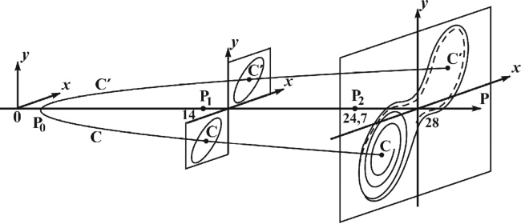
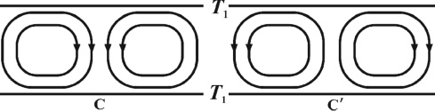

Страницы авторов "Тёмного леса"
Литературный Кисловодск и окрестности
Пишите нам! temnyjles@narod.ru
e-mail: rokityansky@gmail.com
Направлено для опублiкування в редакцiю журналу "Геоiнформатика" Iнститутом геофiзики iм. С.I. Субботiна (лист N01-9-83 вiд 05.02.2014 р. за пiдписом директора академiка НАН України В.I. Старостенка)
Вiд редакцiї журналу "Геоiнформатика" у роботi представлено деякi пiдходи до розв'язання актуальної проблеми, яка носить дискусiйний характер. Є приклади iснування описаного у статтi явища та першi результати, що пiдтверджують iдею впливу використання iнструментальних засобiв на погоднi процеси. На таку проблему i реалiзацiю її для вирiшення практичних завдань звернув увагу росiйський вчений Лев Олександрович Похмельних, який активно просуває результати своїх дослiджень у друкованих виданнях, численних винаходах та розробках.
Воздействие на погоду путем посылки активного мысленного намерения введено в категорию информационных воздействий. Показано, что оно может осуществляться в соответствии с законами физики. Информационные воздействия реализуются в зонах неустойчивости в точках бифуркации, систематически или спорадически возникающих в отдельных частях метеорологической системы.
Ключевые слова: гидродинамическая неустойчивость атмосферы, детерминированный хаос, бифуркация, информационное поведение.
Погода и климат были и остаются основными элементами окружающей среды. Неблагоприятные погодные условия снижают урожаи сельскохозяйственных культур, а стихийные бедствия приносят огромный ущерб. Общепринятая схема реагирования на такие явления включает их прогноз, объявление тревоги и принятие мер, снижающих негативные последствия. Более кардинальным решением проблемы было бы смягчение и предотвращение самих неблагоприятных и опасных явлений. Проблема управления погодой интересовала многих учёных. Один из них - крупнейший математик XX в. Джон фон Нейман, развивший аксиоматику теории множеств, предложивший кольца операторов для описания квантовой динамики, внесший фундаментальный вклад в проектирование цифровых компьютеров. В 1950 г. он сказал: "Компьютер позволит нам разбить атмосферу в каждый момент на устойчивые и неустойчивые области. Поведение устойчивых областей мы предсказывать умеем, а неустойчивыми можем управлять" путем впрыскивания с самолетов порций дыма. Фон Нейман предсказывал массовое управление погодой уже в 1960-е годы. Дайсон [3] критикует это предсказание, утверждая, что движения в атмосфере локально неустойчивы и часто хаотичны, что затрудняет прогноз и исключает управление погодой [3, с. 866]. Таковы крайние представления современной официальной науки о возможности технического управления погодой. Опробование физических методов (инжекция аэрозолей, электромагнитное облучение и др.) [5] показывает, что воздействие на погоду возможно, но их эффективность (экономичность, экологическая чистота, процент успешных воздействий) в настоящее время очень низкая.
Между тем имеется огромное количество свидетельств на всех континентах во все исторические времена, включая наши дни, что отдельные люди или группы людей силой своего мысленного желания, магического ритуала, молитвенного обращения добивались изменения погоды в желаемом благоприятном направлении. Будем называть этот метод информационной коррекцией погоды.
Мышление цивилизованных народов, воспитанное на успехах научно-технической революции XVIII-XX вв., отвергает возможность такой коррекции погоды, относя все свидетельства к категориям фольклора или случайных совпадений. Важность проблемы стимулировала автора попытаться проанализировать ее заново, первые результаты такого анализа представлены ниже.
До недавнего времени мало кто сомневался, что при описании детерминированных систем можно достичь любой степени точности, если удается собрать достаточное количество информации. Сто лет назад А. Пуанкаре обнаружил, что в некоторых детерминированных механических системах может возникать хаос, однако такой результат был воспринят как математический курьез. В 1963 г. американский метеоролог Э. Лоренц опубликовал работу "Детерминированное непериодическое течение" [10], в которой показал, что простая система из трех нелинейных дифференциальных уравнений, описывающая со значительными упрощениями течение жидкости в плоском слое, дает решения, соответствующие хаотическим траекториям. Это привело к понятию странного аттрактора и созданию новой теории сложных иерархических динамических систем. В предложенной теории эволюция системы рассматривается как процесс возникновения новых пространственновременных структур через последовательность неустойчивостей, порождающих каскад дискретных эпизодов - бифуркаций, каждый из которых приводит к нарушению симметрии и возникновению более сложного характеристического уровня в данной динамической системе [6]. При благоприятных условиях в усложняющейся системе происходит расслоение на динамическую и информационную (управляющую) части, система приобретает "информационное поведение" [4]. Такая система "в каждой точке ветвления совершает "поступок" - она выбирает один из последующих участков траектории. Выбор делается на основе долговременной памяти и с возможной экстраполяцией на будущее". Таким образом, автор [4] допускает в сложной физической системе проявление свободы воли и элементов разумного поведения, направленного на выживание и развитие системы. Отметим, что вопрос о материальном носителе памяти и разумности (осуществляющей правильный выбор) в современной науке не решен ни для живых, ни для чисто физических систем.
Рассмотрим простейшую модель атмосферной неустойчивости. Погода на поверхности Земли определяется процессами в тропосфере, верхняя граница которой имеет температуру -65&dec;C с вариацией в пределах +-20&dec;C в зависимости от широты и сезона, нижняя граница - земная поверхность, температура +14&dec;C со значительной вариацией в зависимости от места и времени. Простейшей моделью некоторого участка тропосферы можно считать плоский однородный слой вязкой жидкости, между нижней и верхней изотермическими границами которого разность температур составляет ΔT.
|  | Рис. 1. Два равновероятных варианта C и C' стационарной конвекции в однородном слое конечной ширины: ΔT. T1, T2 > 0, где T1 и T2 - температуры на нижней и верхней границах |
|  | Рис. 2. Возникновение бифуркаций на фазовой диаграмме конвекции в плоском однородном слое в зависимости от параметра P ~ ΔT: x и y - параметры состояния системы, x пропорционально интенсивности конвективного движения, y - разности температур между восходящими и нисходящими потоками [10] |
Рассмотрим, как изменяются процессы в слое при увеличении P ~ ΔT, где P - число Рэлея. При малом P жидкость остается в покое за счет вязкости, перенос тепла обеспечивает теплопроводность. При усилении нагрева наступает момент P0 = 1, когда сила трения преодолевается подъемной силой подогретой снизу жидкости и в слое устанавливается стационарная конвекция, представляющая собой чередование право- и левовращающихся вихрей - ячеек Бенара. В каком вихре окажется наблюдатель в заданной точке пространства, предсказать невозможно, реализации с противоположным направлением вихрей равновероятны (рис. 1).
Таким образом, при P < P0 уравнения гидродинамики имеют одно устойчивое решение, при P > P0 - два устойчивых решения стационарной конвекции C и C', но реальная метеорологическая система - подогреваемый снизу слой - может пойти только по одной из двух возможных траекторий в фазовом пространстве параметров, т.е. при нагревании в точке P = P0 система должна сделать выбор (рис. 2).
Выбор системы определяется тем местом, где впервые возникает флуктуация плотности, достаточно большая, чтобы началось ее всплывание. Если нагрев совершенно однороден, то все места начала конвекции равновероятны и выбор каждой из двух возможных картин стационарной конвекции C и C' равновероятен. Если есть даже очень малые неоднородности в граничных условиях или какое-либо воздействие внешних сил, то они легко смогут повлиять на выбор системы. Таким образом, система в точке бифуркации становится чрезвычайно чувствительным индикатором внешних воздействий, важно только суметь осуществить воздействие нужного качества, в нужном месте, в нужный момент, в нужном направлении, при этом энергия воздействия оказывается несущественной. Такое воздействие принято называть информационным.
Метеорологическая наука и ее технологии еще не достигли такого развития, чтобы рассчитать и осуществить информационные воздействия на метеорологическую систему. Вместе с тем на уровне подсознания отдельных личностей такое воздействие осуществляется, и это следует принять как опытный факт или, по меньшей мере, как рабочую гипотезу, требующую дополнительного исследования. Можно полагать, что подсознание человека связано или является частью (а часть голограммы содержит информацию целого) коллективного бессознательного ноосферы [1, 2, 9], или, другими словами, информационного поля Земли, в котором содержится информация обо всем существовавшем и существующем на Земле, в частности о метеорологических процессах. Если человек владеет техникой вхождения в такое измененное состояние сознания, в котором его мысленное желание трансформируется в пространство подсознательного и из него - в коллективное бессознательное ноосферы, то может сформироваться необходимое информационное воздействие и желаемое реализуется. Механизм такой реализации (как и сознания вообще) пока не раскрыт, можно предполагать, что он включает вибрации тонких полей или субстанции высоких измерений.
Вернемся к рассмотрению конвективных движений в модели плоского слоя (рис. 1, 2). При усилении подогрева скорость течения увеличивается, при P более 14 возникает турбулентность, при P > 24,7 движение становится сложным и нерегулярным [10]: часть времени фазовые траектории системы вращаются по спирали вокруг одного из устойчивых состояний стационарной конвекции C, затем внезапно перескакивают на орбиты вокруг C' и через непредсказуемое число оборотов - обратно на орбиты вокруг C, и так далее (рис. 2). Каждый перескок представляет собой, по существу, бифуркацию, ведущую к значительному изменению циркуляции в системе; предсказать ее крайне трудно, поскольку выбор траектории определяется очень малыми изменениями параметров.
Рассмотренная модель соответствует конвективной неустойчивости, возникающей в атмосфере при сверхадиабатическом градиенте температуры, наблюдаемом 28-30% времени в летние месяцы на континенте, 6-10% - в зимние, 20% - зимой и летом на побережье морей [7]. Известно еще несколько видов гидродинамической неустойчивости в атмосфере: бароклинная, баротропная, баротропно-бароклинная, инерциальная, симметричная, Кельвина-Гельмгольца [8]. Следуя идеям теории сложных динамических систем [4, 6 и др.], можно ожидать, что они ведут себя аналогично рассмотренной модели Э. Лоренца в смысле более трудной прогнозируемости процессов и возможности более легкого управления ими. Некоторые режимы атмосферной циркуляции характеризуются повышенной устойчивостью. Это пассаты, муссоны, отдельные антициклоны и циклоны, локальные явления: бризы, фены и др. Во время устойчивых режимов достоверность прогнозов повышается, воздействие на погоду затрудняется.
В заключение обозначим этические и организационные принципы информационной коррекции погоды.
1. Коррекция погоды допустима только для устранения или смягчения неблагоприятных явлений, угрожающих неурожаем или стихийным бедствием, и должна быть выполнена так, чтобы не возникло негативных эффектов на других территориях (т.е. "во благо" и "не навреди"). Использование метода в военных целях, ради наживы, для демонстрации своих способностей недопустимо; для научных целей и тренировки операторов должно быть ограничено и проводиться под международным контролем.
2. Работа оператора погоды требует большого напряжения сил, она происходит в измененном состоянии сознания, для вхождения в которое требуются время, спокойная благоприятная обстановка, хорошее физическое и душевное состояние. Постановка перед операторами адекватных задач и создание им условий для плодотворной работы должны решаться на государственном уровне под международным контролем.
Благодарность. Автор выражает признательность В.Н. Шуману за просмотр рукописи и ценное замечание.
1. Вернадский В.И. Философские мысли натуралиста. - М.: Наука, 1988. - 522 с.
2. Гроф С. За пределами мозга. - Нью-Йорк: Изд-во Трансперсонального института, 1993. - 503 с.
3. Дайсон Ф. Птицы и лягушки в математике и физике // Успехи физ. наук. - 2010. - Т.180, N8. - С.859-870.
4. Кадомцев Б.Б. Динамика и информация // Успехи физ. наук. - 1994. - Т.164, N5. - С.449-530.
5. Качурин Л.Г. Физические основы воздействия на атмосферные процессы. - Л.: Гидрометеоиздат, 1990. - 463 с.
6. Николис Д. Динамика иерархических систем. - М.: Мир, 1989. - 486 с.
7. Хргиан А.Х. Физика атмосферы. - М.: Изд-во МГУ, 1986. - 328 с.
8. Шакина Н.П. Гидродинамическая неустойчивость в атмосфере. - Л.: Гидрометеоиздат, 1990. - 309 с.
9. Юнг К.Г. Архетип и символ. - М.: Ренессанс, 1991. - 304 с.
10. Lorenz E.N. Deterministic nonperiodic flow // J. Atm. Sci. - 1963. - V. 20. - P.130-141.
I.I. Рокитянський
Iнститут геофiзики iм. С.I. Субботiна НАН України,
пр. Палладiна, 32, Київ 03680, Україна, e-mail: rokityansky@gmail.com
Вплив на погоду через посилання активного мисленного намiру введено в категорiю iнформацiйних впливiв. Показано, що вiн може здiйснюватися вiдповiдно до законiв фiзики. Iнформацiйнi впливи реалiзуються в зонах нестiйкостi в точках бiфуркації, що систематично або спорадично виникають в окремих частинах метеорологiчної системи.
Ключовi слова: гiдродинамiчна нестiйкiсть атмосфери, детермiнований хаос, бiфуркацiя, iнформацiйна поведiнка.
PHYSICAL BASIS OF INFORMATION WEATHER CORRECTION
I.I.Rokityansky
Institute of Geophysics of Ukraine National Academy of Science,
Palladin av., 32, Kiev 03680, Ukraine, e-mail: rokityansky@gmail.com
Weather correction by technological methods is feasible but its effectiveness is rather low. Meanwhile, there is a huge amount of evidence on all continents and in all historical times, including today, that individuals or groups of people by means of mental impulse, magic ritual or, prayer can change the weather at will. This method will be called informational weather correction, and it works in accordance with physical laws. To substantiate this assertion the author uses mathematical works of J.H. Poincare and E.N. Lorenz devoted to deterministic chaos, physical works of D. Nicolis and B.B. Kadomcev on the dynamics of hierarchical systems, and natural philosophy works of V.I. Vernadsky, S. Grof and K.G. Jung on the noosphere and collective unconscious. Informational weather correction can be realized in unstable zones in bifurcation points, which systematically arise in some parts of meteorological system.
Keywords: atmosphere hydrodynamic instability, deterministic chaos, bifurcation, information behavior.
1. Vernadskij V.I. Filosofskie mysli naturalista [Philosophical thoughts of naturalist]. Moscow, Nayka, 1988, 522 p.
2. Grof S. Za predelami mozga [Beyond the Brain: Birth, Death and Transcendence in Psychotherapy]. Albany N.Y., State University of New York Press, 1993, 503 p.
3. Dajson F. Pticy i ljagushki v matematike i fizike [Birds and frogs in mathematics and physics]. Uspekhi Fizicheskikh Nauk [Advances of Physical Sciences], 2010, v.180, no. 8, pp. 859-870.
4. Kadomcev B.B. Dinamika i informacija [Dynamics and information]. Uspekhi Fizicheskikh Nauk [Advances of Physical Sciences], 1994, v.164, no. 5, pp. 449-530.
5. Kachurin L.G. Fizicheskie osnovy vozdejstvija na atmosfernye processy [Physical basis of the impact on atmospheric processes]. Leningrad, Gidrometeoizdat, 1990, 463 p.
6. Nikolis D. Dinamika ierarhicheskih system [Dynamics of hierarchical systems]. Moscow, Mir, 1989, 486 p.
7. Hrgian A.H. Fizika atmosfery [Atmospheric physics]. Moscow, Publ. Moscow State University, 328 p.
8. Shakina N.P. Gidrodinamicheskaja neustojchivost' v atmosfere [Hydrodynamic instability in the atmosphere]. Leningrad, Gidrometeoizdat, 1990, 309 p.
9. Jung K.G. Arhetip i simvol [Archetype and symbol]. Moscow, Renaissance, 1991, 304 p.
10. Lorenz E.N. Deterministic nonperiodic flow. Journal of the Atmospheric Sciences, 1963, v.20, pp.130-141.
Поступила в редакцию 05.02.2014
Received 05/02/2014
(c) И.И. Рокитянский
УДК 550.37, 550.38
ISSN 1684-2189
Страницы друзей "Темного леса"
Последнее изменение страницы 13 Jan 2020